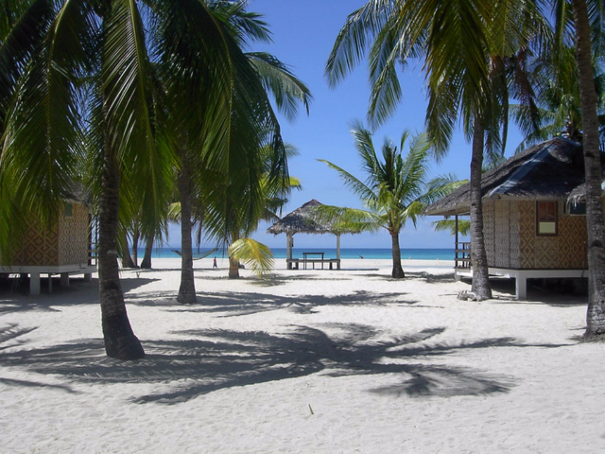
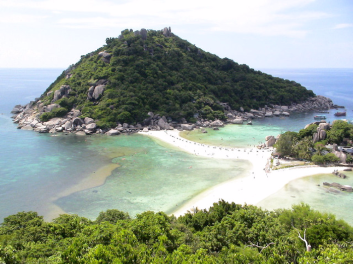

Southeast Asia's mystical gem also known as Indonesia is an enchanting country made up of lush volcanic islands. Indonesia is the worlds fourth most populous nation. Reknown for its natural resources including tea, tobacco, spices and rubber, Indonesia's natural landscape includes over 400 volcanoes, of which 100 are still activce. Straddling the equator, Indonesia has large swaths of green rainforest, beautiful beaches, and is home to Komodo dragons, elephants, orangutans and tigers. The capital city of Jarkata is a historic mnclix of several cultures which include, Arab, Chinese, European and Indian.
Home to the 8th wonder of the world (The Banaue Rice Terraces located in Northern Luzo), the Philippines is a jammed packed with natural wonders. A former Spanish colony, the Philippines spans over 117,000 square miles and is the leading producer of coconuts. Experience the lush beaches of Borocay or absorb the rich in Manilla, a visit to the Philippines is a unique experience.
The Southeast Asian country of Thailand is known for its tropical beaches, opulant palaces, ancient ruins and ornate temples. In the capital city ofBangkok, visitors will find modern landscapes intertwined with quiet canal side communities. Thailand holds the distinction of being the only Southeast Asia country that wasn ot colonized by a European country. Due to deforestation in the once lush jungles, Thailand has completly banned logging. Home to over 35,000 Temples, Thailand is rich in architectural and natural wonders. Vistors can observe over 1,500 species of orchids and the majestic large elephants.